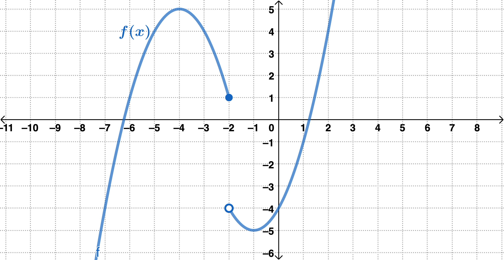
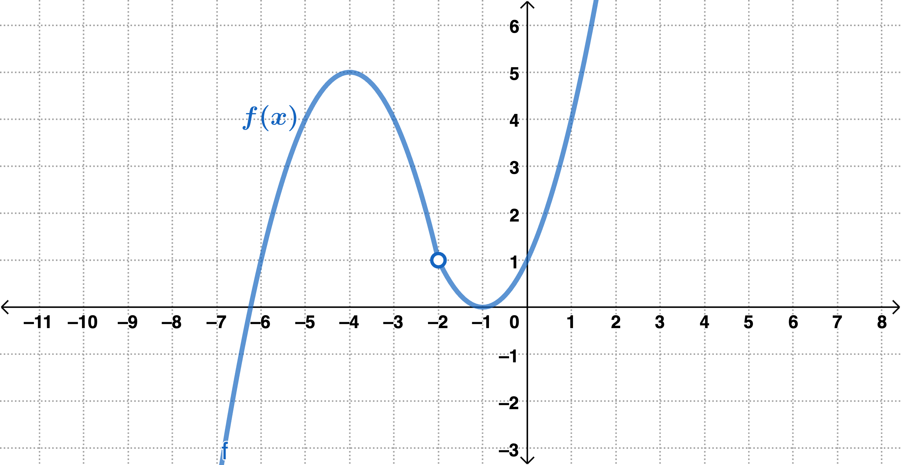
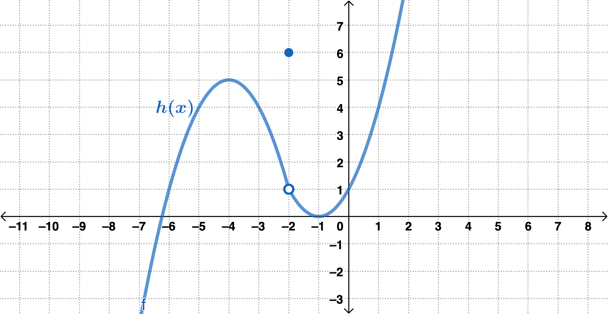
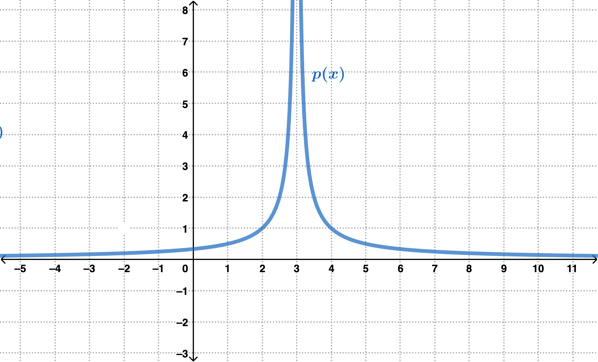
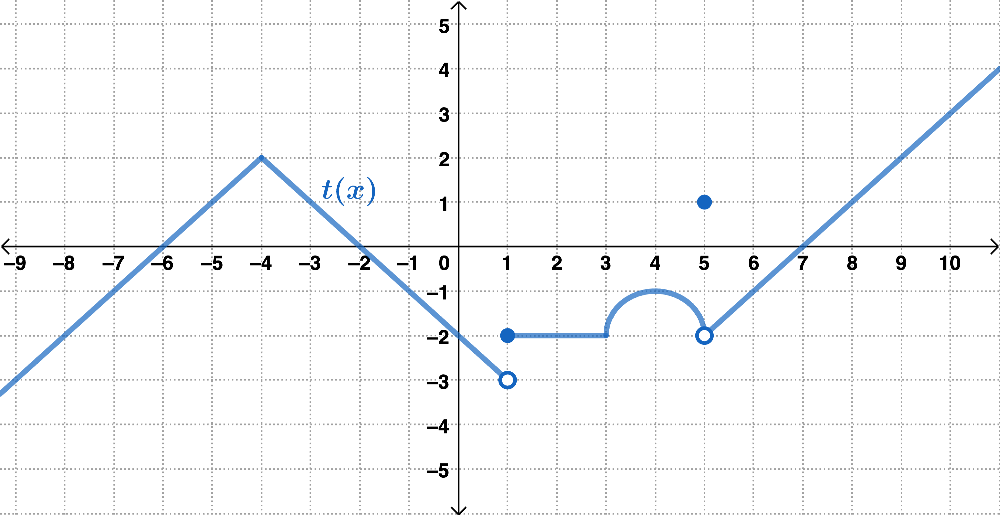
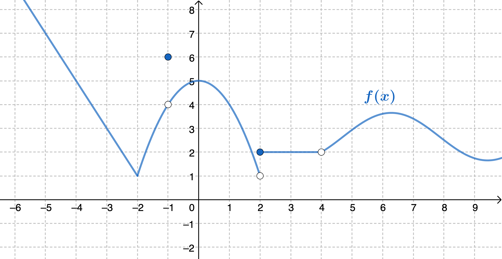

Directions: Answer each of the following as best you can. Feel free to discuss your thoughts about the questions with some peers around you. For additional practice problems and explanations, refer to the Math 142 textbook which is free and can be downloaded as a PDF at Texas A&M The OAKTrust Digital Repository.
Given \(\displaystyle {\lim_{x\rightarrow \infty} f(x) = 4}\) and \(\D {\lim_{x\rightarrow -\infty} f(x) = -2}\text{,}\) what do you then know about any horizontal asymptotes of \(f(x)\text{?}\)
Examine the limits above, group them together by finding patterns or common characteristics, then fill in the blanks below. Some are already filled in for you.
Given \(\D f(x)=\frac{c}{x^{n}}\) where \(c\) is any real number and \(n>0\) then \(\displaystyle \lim_{x\rightarrow \infty}f(x)\,\stackrel{\textstyle =0}{\rule{0.75in}{0.05mm}}\) and \(\D{\lim_{x\rightarrow -\infty} f(x) } \rule{1in}{0.05mm}\text{.}\)
Given \(\D g(x)= e^{nx}\) where and \(n>0\) then \(\D{\lim_{x\rightarrow \infty} g(x)}\,\stackrel{\textstyle \to \infty}{\rule{0.75in}{0.05mm}}\) and \(\D{\lim_{x\rightarrow -\infty} g(x)} \rule{1in}{0.05mm}\text{.}\)
Given \(\D h(x)= e^{-nx}\) where and \(n>0\) then \(\D{\lim_{x\rightarrow \infty} h(x)}\,\stackrel{\textstyle =0}{\rule{0.75in}{0.05mm}}\) and \(\D{\lim_{x\rightarrow -\infty} h(x)} \rule{1in}{0.05mm}\text{.}\)
Find any (a) horizontal asymptotes, (b) the coordinates of any holes, and (c) vertical asymptotes of the function. If there are no horizontal asymptotes, describe the end behavior using limit notation.
Apply the techniques from part(b) to compute the limits in part(a) and state the horizontal asymptotes of \(f\text{.}\) If there are none, describe the end behavior using limit notation. It may help to refer to problem 4 from the “Getting Warmed Up and In the Right Mindset” section.
Below is an outline of the Definition of Continuity at a Point. Fill in the blanks below to correctly complete the text in the definition. The Math 142 textbook has some very good references to help better understand continuity. See pages 124-131 for definitions, examples, and step-by-step instructions.
A function \(f\) is continuous at a point where \(x = c\) if and only if the following three conditions are satisfied:
If you know \(\D \lim_{x\rightarrow 2}g(x) = 4\) and \(g(2)=7\text{,}\) can you correctly conclude that \(g(x)\) continuous at \(x=2\text{?}\) Why or why not?
Use the graph of \(f(x)\) to determine if \(f(x)\) is continuous at \(x=-2\text{.}\)

Graph of a function \(f(x)\) plotted on the coordinate axes. The graph increases from the bottom left until it reaches a peak at \((-4,5)\) and then decreases until it hits the point \((-2, 1)\text{.}\) The graph then picks up again at the point \((-2,-4)\) where it decreases to the point \((-2,-4)\text{,}\) where it then increases until it leaves the coordinate axes on the top right. The graph has a closed circle at \((-2,1)\) and an open circle at \((-2,-4)\text{.}\)
Use the graph of \(f(x)\) to determine if \(f(x)\) is continuous at \(x=-2\text{.}\)

Graph of a function \(f(x)\) plotted on the coordinate axes. The graph increases from the bottom left until it reaches a peak at \((-4,5)\) and then decreases until it hits the point \((-1, 0)\text{,}\) then increases until it leaves the coordinate axes on the top right. The graph has an open circle at \((-2,1)\text{.}\)
Use the graph of \(h(x)\) to determine if \(h(x)\) is continuous at \(x=-2\text{.}\)

Graph of a function \(h(x)\) plotted on the coordinate axes. The graph increases from the bottom left until it reaches a peak at \((-4,5)\) and then decreases until it hits the point \((-1, 0)\text{,}\) then increases until it leaves the coordinate axes on the top right. The graph has an open circle at \((-2,1)\) and a closed circle at \((-2,6)\text{.}\)
Use the graph of \(p(x)\) to determine if \(p(x)\) is continuous at \(x=3\text{.}\)

Graph of a function \(p(x)\) plotted on the coordinate axes. Starting on the left, the graph increases away from, but never touches, the \(x\)-axis, reaching a vertical asymptote of \(x = 3\text{.}\) The graph then decreases to the right of the vertical asymptote, approaching but not touching the \(x\)-axis until it leaves the coordinate axes.
Use the graph of \(t(x)\) to determine if \(t(x)\) is continuous at \(x=-4\text{.}\)

Graph of a piece-wise function \(t(x)\) plotted on the coordinate axes. Staring on the bottom left, the graph in linear and increases until it reaches a peak at \((-4,2)\) and then decreases to the point \((1,-3)\text{.}\) The graph is then a horizontal line with endpoints \((1,-2)\) and \((3,-2)\text{,}\) and then forms the top of a semicircle with endpoints \((3,-2)\) and \((5,-2)\text{.}\) The graph then increases and is linear from the point \((5,-2)\) until it leaves the coordinate axes on the top right. The graph has closed circles at \((1,-2)\) and \((5,1)\text{,}\) and the graph has open circles at \((1,-3)\) and \((5,-2)\text{.}\)
Determine the intervals of continuity for each function below. Page 126 of your textbook has a list of domain restrictions that will help find the intervals of continuity for functions in symbolic form.
Use the graph of \(f(x) \) to answer questions #1-3.

Graph of a piece-wise function \(f(x)\) plotted on the coordinate axes. Starting on the left, the graph decreases and is linear until the point \((-2,1)\) and then forms a parabola with endpoints \((-2,1)\) and \((2,1)\) and vertex \((0,5)\text{.}\) The graph is then a horizontal line from \((2,2)\) to \((4,2)\text{.}\) After the point \((4,2)\text{,}\) the graph increases and reaches a peak between \(x=6\) and \(x=7\) before dipping slightly and increases again after \(x=9\) and leaving the coordinate axes. The graph has closed circles at \((-1,6)\) and \((2,2)\text{,}\) and open circles at \((-1,4)\text{,}\)\((2,1)\text{,}\) and \((4,2)\text{.}\)
Suppose for some function \(g(x)\text{,}\) you know \(\D{\lim_{x\rightarrow 3^-} g(x) \rightarrow -\infty}\text{.}\) What can you conclude happens at \(x=3\text{?}\)
\(g(x)\) has a vertical asymptote at \(x=3\text{.}\)